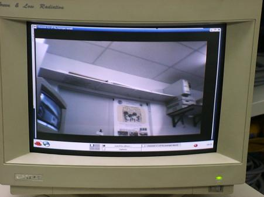

El microbot CRM-Observer fue especialmente construido con motivo de la IV Feria "Madrid por la Ciencia", en la que
el CRM tuvo la oportunidad de participar representando a la Escuela Politécnica Superior de la UAM.
HISTORIA
Tras el diseño de Bartolo y dada la complejidad de su manejo,
en el CRM teníamos intención de desarrollar un pequeño robot que tuviera las mismas características de Bartolo
pero de un tamaño y velocidad más reducidas. Aprovechando la posibilidad de poder mostrar este nuevo diseño
en la feria "Madrid por la Ciencia", la idea se hizo realidad. Actualmente, Observer sustituye a
Bartolo en el proyecto "Microbot Explorador".
MONTAJE
Observer se montó a partir de la estructura base de un Robot Clónico desarrollada por
Andrés Prieto-Moreno Torres
al que incorporamos una plataforma adaptada para esta base, que en el caso de Observer está constituida
por dos "pisos". Esta plataforma permite utilizar una misma base para distintos robots, siendo posible
intercambiar la plataforma para reutilizar la base sin tener que desmontar el robot (ver
robot Pulsos).
El "Robot de Docencia" es prácticamente un Robot Clónico
La plataforma debía contener la mini-cámara montada sobre un sistema de servos que permitiera un amplio
grado de libertad de movimientos de la cámara con el objetivo de poder visualizar todo el entorno alrededor
del robot.
Montaje del sistema de servos de la mini-cámara
Este sistema de movimiento de la cámara es controlado por una placa
GP_Bot diseñada
en la EPS. Esta placa además de controlar el movimiento de la cámara también controla el movimiento del
vehículo. Esto es posible porque la placa soporta el control de 4 motores.
 Plataforma inicial para el montaje de Observer
Plataforma inicial para el montaje de Observer
Tras el montaje del sistema de servos, el siguiente paso era el montaje del sistema de comunicaciones
entre el PC y el robot. El sistema de desarrollo GP_Bot dispone de un conector para un módulo de radio
Aurel y en el CRM disponemos de un
software para comunicación radio
que nos ha dado muy buen
rendimiento sobre el robot Bartolo. Sin embargo, en esta ocasión
decidimos experimentar con los radio-modem
disponibles en el mercado, para comprobar su funcionamiento y
compararlos con nuestro sencillo sistema de comunicaciones. El
radio-modem seleccionado fue el
Radiomodem Wlink434s de DMD.
Imagen del kit Wlink434s completo
El radio-modem lo empleamos como sistema de comunicación entre PC y
robot con el objetivo de enviar comandos
de control desde el PC. Inicialmente, el robot no envía ninguna
información al PC, aunque esto es posible. El radio-modem viene
preparado para conectarse a un PC, pero no para poder conectarse a un
sistema de desarrollo como la GP_Bot, por lo que fue necesario adaptar
un cable RJ-45 (de red), que es el empleado por el Wlink434s, al
conector serie disponible en la GP_Bot. Al
mismo tiempo, y dando un paso más allá en lo que hasta ahora habíamos
realizado, compramos un sistema radio
de transmisión de audio/video en la banda de los 2,4 GHz. Este sistema,
completamente compatible con el radio-modem,
que funciona en la banda de los 433 MHz, nos permite enviar la imagen de
la mini-cámara al PC, donde es
capturada por un tarjeta de tv (con entrada de video, cosa bastante
común en estas tarjetas). Este sistema
de transmisión de video es idéntico al empleado en entornos domésticos
para visualizar el video, dvd, etc. en
una televisión alejada del aparato.
Montaje del módulo de transmisión de imagen y del radio-modem
La inclusión de ambos módulos de comunicación obligó a necesitar incorporar un segundo "piso" a la
plataforma del robot para poder soportar la cantidad de dispositivos necesarios. El diseño resultante dispone
de una base móvil (Robot Clónico), una primera "planta" donde se ubican el emisor de video y el sistema GP_Bot
y una última "planta" donde va el sistema de servos para la mini-cámara, y el radio-modem. El resultado es
este:
Plataforma resultante tras la incorporación de todos los elementos
Tras el montaje de todos los componentes del robot, ya solo quedaba programar el microcontrolador del
robot y la aplicación de control desde el PC. Esto fue sencillo, ya que reutilizamos mucho del software
desarrollado para Bartolo y para otras aplicaciones, como "los ojos", de la que reutilizamos
el control mediante canvas, mediante el cual solo es necesario el
ratón como dispositivo de control, y que en este caso se empleo tanto
para el control del movimiento del robot
como de la mini-cámara, demostrando que es un sistema de control
INTUITIVO y FÁCIL:
Sistema de control desde el PC. Se aprecian los dos canvas de control y la imagen de la mini-cámara
El software del PC fue desarrollado sobre plataforma GNU-Linux y utilizando librerías de
GNOME. Lo mismo para el caso de la visualización de la
imagen de la mini-cámara, que se realizó empleando la aplicación
xawtv. De este modo, es posible controlar el
robot aunque no lo estemos viendo, ya que podemos manipularlo con la información recibida de la mini-cámara.
Aquí teneís un ejemplo de como se vé:

Imagen enviada desde la mini-cámara al PC
El resultado final fue un robot bastante EXPECTACULAR en cuanto a las posibilidades que ofrece. Posteriormente
la idea es incoporarle más sensores que trasmitan más información a la persona que lo manipula desde el PC.
Además este robot guiado desde PC permite realizar aplicaciones de control automático a través del PC, ya que
es posible conseguir que un programa de PC controle el vehículo, como en el caso de
Cortocircuito.
 Aspecto final de Observer
Aspecto final de Observer
MODIFICACIONES
Para intentar mejorar el alcance del sistema de vídeo, se cambiaron
las bases metalizadas que forman los distintos módulos del robot, entre
los que se encuentra el emisor de vídeo, por bases de metracrilato.
 Observer transparente
Observer transparente
Observer transparente "en acción"
Documentos adicionales